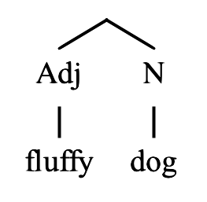
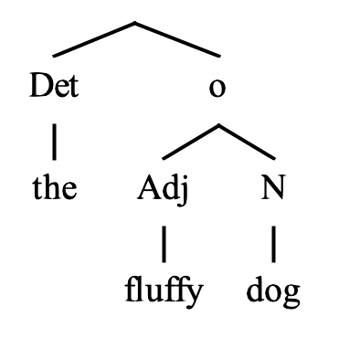
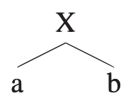
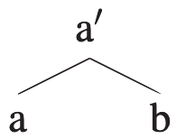
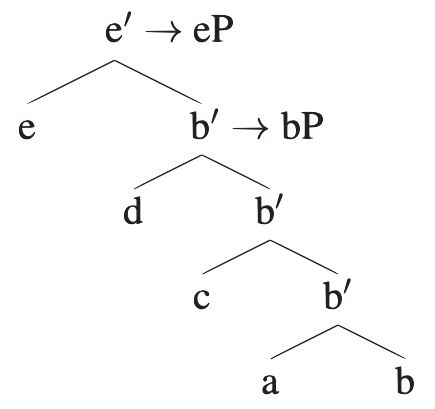
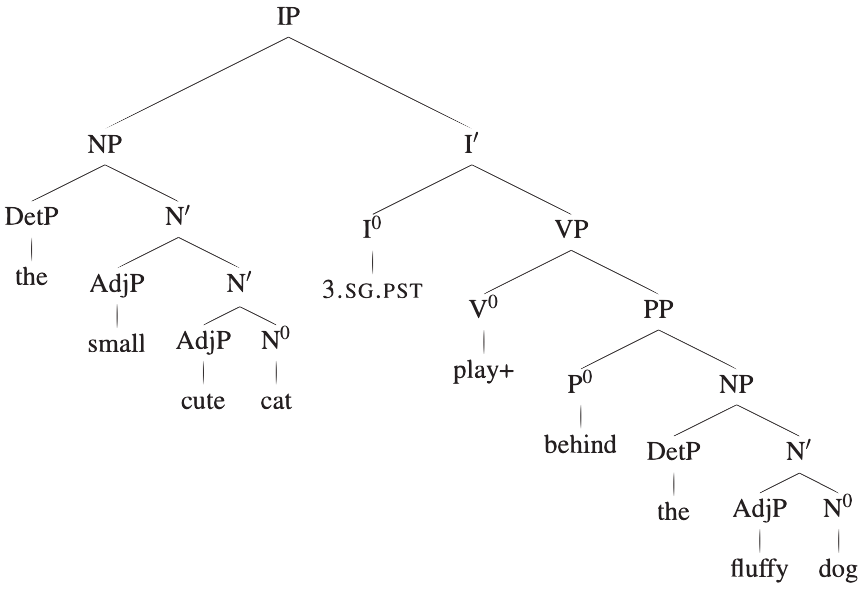

That mental computations are performed not on a linear set of words but a hierarchical organized structure was an important discovery.
Hypotheses for how words are organized in a sentence
H1: A sentence is a collection of words
False: There is nothing to distinguish the significance of word order in H1, but we know it's important.
H2: A sentence is an ordered collection of words
False: There is nothing to specify what order is good or bad.
Some substrings consist of words that "belong" more together than others. They are more cohesive.
H3: A sentence is an ordered collection of words groups by constituents
Tests for cohesiveness (among others)
Substitution
That author described his novel to the publisher yesterday.
That author described his novel to [him] yesterday.
That author described [it] to the publisher yesterday.
This kind of substitution is not possible with non-cohesive strings.
Can you imagine substitutions for the underlined strings in the following sentence?
That author described his novel to the publisher yesterday.
Movement
That author described his novelto the publisher yesterday.
His novel, that author described to the publisher yesterday.
To the publisher, that author described his novel yesterday.
Movement isn't possible with non-cohesive substrings
Can you move the underlined substrings in the following sentence?
That author described his novel to the publisher yesterday.
Questions/Fragment answers
That author described his novel to the publisher yesterday.
Question 1
Q: [What] did that author describe to the publisher yesterday?
A: [his novel]
Question 2
Q: [Who] did that author describe his novel to yesterday?
A: [the publisher]
Invalid:
Q: ...?
A: [novel to]
Conclusions
"Cohesive substrings" = "constituents"
Note of caution:
Constituency tests work fine but they are unidirectional
If they succeed, we know that the relevant substring is a constituent
If they fail, then either
the substring is not a constituent
the substring is a constituent but the test failed for a different reason
So, grammar treats some substrings differently from others.
Some substrings form constituents, others do not.
Organization of Constituents
Constituents are always nested. A constituent is fully contained in another constituent.
We never find partially overlapping constituents: * [word 1 [word 2] word 3]
Terminology of Structural Relations
Dominance:
A node α dominates a node β iff there is a descending path from α to β.
Mothers/Daughters/Sisters:
A node α is the mother of a node β iff α immediately dominates β.
β is the daughter of α.
β and ɣ are sisters iff β and ɣ have the same mother α.
Terminal nodes:
A node α is a terminal node iff α has no daughters.
Exhaustive dominance:
A node α exhaustively dominates a string S iff
α dominates every terminal t∈S
There is no terminal t'∉S that α dominates
Constituents:
Constituents are strings that are exhaustively dominated by a single node.
Branching
We will assume that branching is only binary.
Syntactic Tree
A syntactic tree is a binary branching tree. It is built by iteration of a structure-building operation which has been called "Merge".
Merge
Merge takes two elements α and β, and forms a single, binary branching constituent out of them.
Merge of two words:

Merge of a word with a constituent formed by a previous iteration of Merge:

Merge Terminology
Merge(a,b)->
Syntax-tree-merge.png
but what is X?
X will be a "projection" of either 'a' or 'b'. That is, either 'a' or 'b' will pass on some of its properties (or features) to X.

Think of the x' notation as indicating that the "xness" of this constituent has been passed up to this node from somewhere else.
Projection
Maximal Projection or Phrase:
When the properties of a node stop projecting to the next node up, we call the highest relevant projection "a maximal projection" or a "phrase".
For example, here when b stops projecting (above d and b') we have "bP" or a "b phrase". Same for "eP".

What determines which node projects?
Notion of 'head'
A head is a terminal node that determines the properties of a constituent. It cannot be formed by the merge operation.
X0: the head
XP: the maximal projection
X': all intermediate projections
X'-schema
Syntax-tree-x'-schema.png
X0 is the head of the maximal projection XP.
What about alpha, beta, and gamma?
There are maximal projections.
The complement of X0 is the sister of X0, that is, gamma.
The specifier of the XP is the sister of the highest X', that is, alpha.
An adjunct is a merged constituent that is neither the complement nor the specifier.
Representations of X':
Do this or
Do NOT do this or
Which node projects
What happens when a verb merges with an NP (Noun Phrase)? Which one projects?
Whichever is the property of the constituent resulting from the merge.
Distributional Tests:
Given verb "saw" and NP "the fluffy dog" the resulting constituent "saw the fluffy dog" behaves like a verb. Let's test
It cannot appear as the subject of a sentence, the way an NP can:
[He] smiled
*[Saw the fluffy dog] smiled
It cannot appear as an object, like an NP can:
I like [him]
I like *[saw the fluffy dog]
It CAN appear as a predicate, the way a verb (VP) can:
He [left]
He [saw the fluffy dog]
Topmost Node of a Sentence (Inflection)
Syntax-tree-topmost-node-question-mark.png
For the tree above, what should the topmost node be, the one marked "?"?
Another way to ask this is, of which head is this sentence a maximal projection?
For this class we'll take it as a given that the sentence is a maximal projection of a head that carries the features for tense and subject agreement.
We'll call this head "I0" for "Inflection".
In this sentence we have
Past tense
3rd person singular

This assumption that a sentence is the project of an inflection head I0 consists of two arguments:
Inflectional material like tense and agreement should be represented as a head separate from the verb. This is most likely because across all languages, inflection is represented differently, and is a change to base morphemes.
This (inflectional) head is the head of the entire sentence. Axiom that will not be explained in this class.
Assignment 01
Please draw trees for the sentences below. I will use the application TreeForm.
I saw him at the hotel where Susan announced that the president will be staying

 or
or 
 or
or